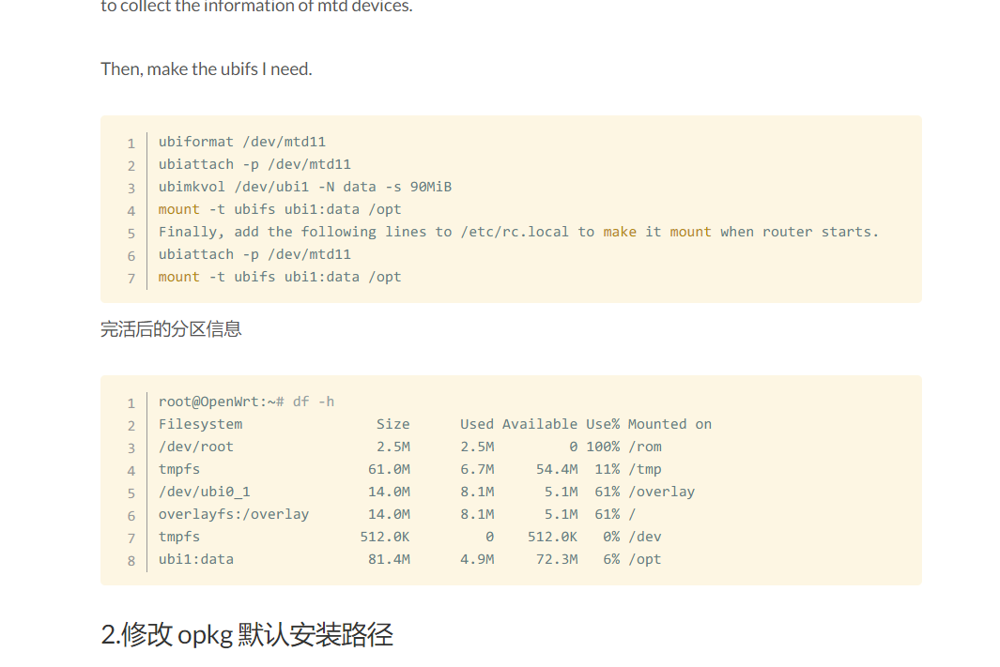
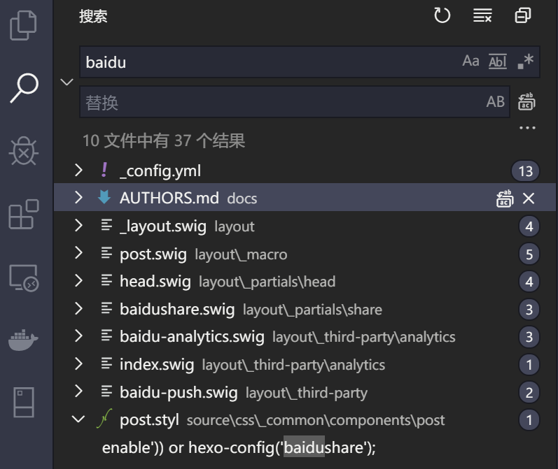

Typecho
年初的时候终于把博客写了起来，到现在也水了大概 50 篇博客文章。大一大二的时候也整个，当时还是使用 Wordpress ，只是玩心太重没能坚持下来写。直到毕业后找到了第一份工作，955 工作制，才有时间精心打理这个博客。
博客使用的是 NexT.Mist 的主题 ，不得不说 NexT.Mist 主题是我用过的 typecho 里面最好的主题，没有之一。我拿来后经过大刀阔斧地删除了很多无用的内容，并把归档设置为首页。能精简的就精简掉，没有花里胡哨的花架子。但也有一些缺点，比如：对中文排版不够好，我希望二级标题三级标题还有引用等能呈现的突兀一些，尤其是在移动端的时候，三级标题以及四级标题几乎和正文一样了；代码高亮字体太小，不美观。



hugo
期间也折腾了 hugo，但 hugo 的主题没有找到像 next 一样的，很僵硬。不过我平时写文档最后还是喜欢用 hugo 来生成。或者用 Typora 导出 PDF 然后上交给领导😂。在我看来 hugo 最大的优势就是精简和极速。就单单一个 hugo 二进制可执行文件即可创建站点，不像 hexo 那样要依赖上千的包和上万个文件。hugo 的这一点比 hexo 高到不知道哪里去了😂。
hexo
感觉 hexo 的主题无论是在数量还是质量抑或是美学上不知道比 hugo 高到不知到哪里去了😂
无意间在发现了 零の轨迹 的博客，使用的也是 NexT.Gemini 主题，主题很符合我的期望，遂采用了 NexT.Gemini 主题。克隆下来博主的 Elietio.github.io repo 就撸起袖子加油干。
安装
网上类似的教程一搜一大把，写得其实很详细 。由于 hexo 是使用 nodejs 开发，所以需要装 nodejs 以及 nodejs 的包管理器 yarn，不推荐用 npm。我的环境是 Debian 10。debian 10 上已经有 nodejs 的包了，所以直接 apt 一把梭就 ok
官方是使用 npm 进行安装，个人推荐使用 yarn 进行安装，关于 yarn 和 npm 优劣分析，可以参考这篇文章《Yarn vs npm: 你需要知道的一切》
1 | # 添加 nodejs 包管理器 yarn 的源 |
精简
使用 yarn 安装完依赖后，原项目太臃肿了，还是第一次见人把 models 放进 git repo 里的😂。咱就精简一下吧，去掉那些花里胡哨的东西，四博客更加轻量和精简。
1 | 8.0K _config.yml |
精简第三方插件
第三方插件装在了 themes/next/source/lib ，有很多我不需要的。所以需要一个一个精简掉。
1 | 3.8M algolia-instant-search # 站内搜索 |
精简后
1 | 432K font-awesome |
最后我只保留了字体和 jQuery 以及装了个 jquery_lazyload 用来延迟加载大量的图片文件。
同时在 layout 目录里的文件也精简掉了很多，去掉了看板娘、分享、赞赏、热度、加载进度条等花里胡哨的东西。对于我来说只追求文章内容的排版，这一堆幺蛾子没啥用，都是一堆花架子。
fuck baidu
1 | # sitemap |
原项目里使用的 baidusitemap.xml ，对于咱这种对 baidu 恨之入骨的人来说当人是无法忍受的了，所以就关键字搜索 baidu ，干掉了所有与百度相关的代码。

精简后
经过四个多小时的精简终于达到了我所满足的地步，文件数量以及静态文件也比自带的减少一倍，在 Google page test 都能达到 92 分，如果加上 CDN 的话分还能再高一些。
1 | 1.0K bower.json |
效果图


NexT.Gemini 主题的引用部分背景色好评，用来提醒读者我是引用剽窃别人的还是不错滴😂，我倒是喜欢用 剽窃二字替代引用，用来自嘲自己知识水平不足只能靠剽窃😀。
后续
后续尝试着把目前在使用的 hexo 主题 移植到 hugo 上，对于这种菜鸡运维来说还是挺难的。